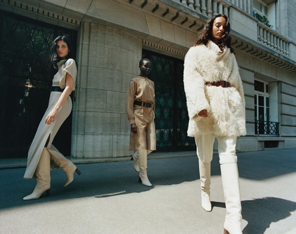

1960년대는 패션계와 현대
적 패션 산업의 분기점이 되는 시기로 정치, 경제, 문화 등 사회가 안정을 유지하였으며 새로
운 모더니즘(Modernism)과 미니멀리즘(Minimalism)이 나타났다. 미니멀리즘은 그 명칭에서 시
사하듯이 본질적인 요소만으로 감축된 미술로써 표면의 장식이나 표현적인 행위 없이 표현된
것으로 단순한 기하학적 형태를 주로 사용하고 작품의 부분보다는 전체를 강조하는 미술사조
이다. 미니멀리즘은 특히 패션에 지대한 영향을 미쳤으며 미니멀리즘 패션은 1960년대 미니멀
리즘이 현대의 모던함과 접목되어 나타난 것으로 과거 스타일의 단순함과 최소화, 극소화라
는 요소를 부각시킨 새로운 기능주의에 역점을 둔 것이라 할 수 있다
